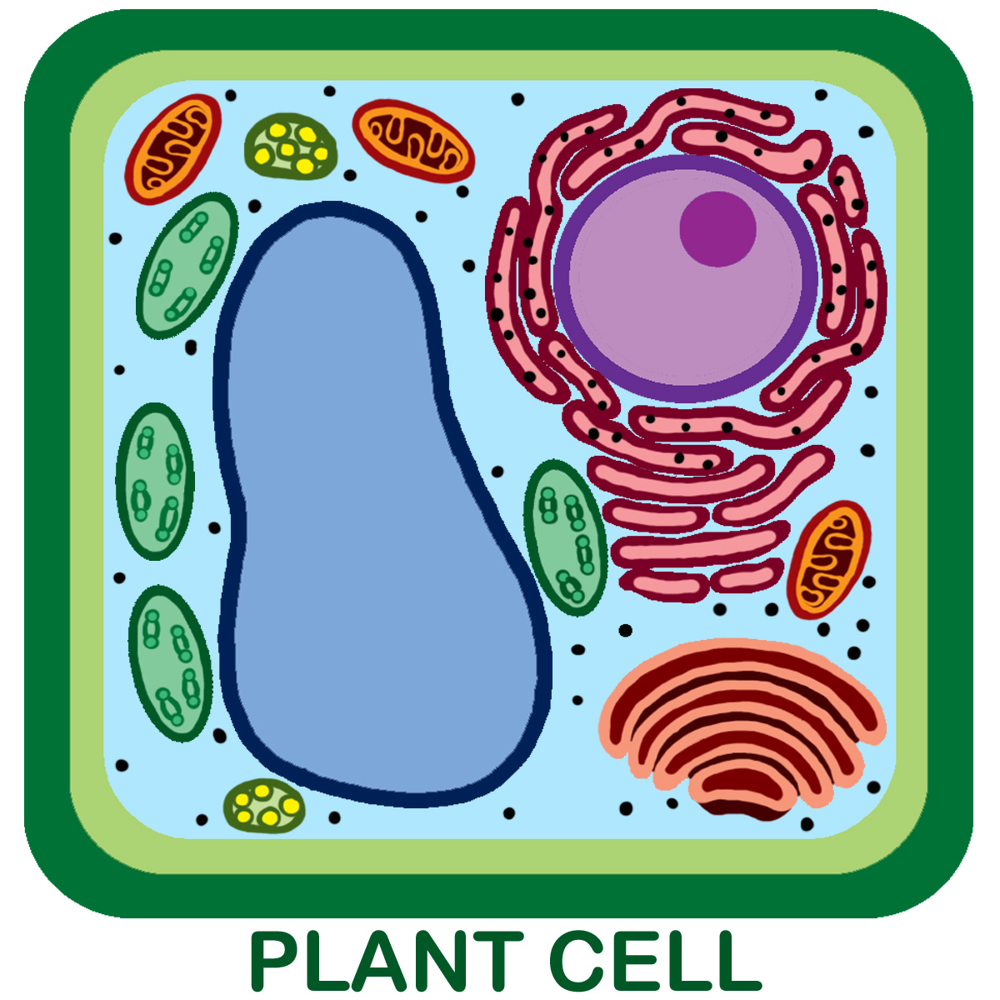

النواة
تحتوي معظم المادة الوراثية وتشارك في تنظيم أنشطة الخلية. يحيط بها غلاف نووي ذو ثقوب تنظّم التبادل.
منصة تفاعلية لتعلّم الأحياء: استكشف الخلية، شاهد العمليات الحيوية، نفّذ المحاكاة، واختبر فهمك.
اختر موضوعًا لعرض تسلسل شرح جاهز. يمكن التنقل بين المراحل، إظهار سؤال للنقاش، ثم فتح المحاكاة المناسبة.
ابدأ بسؤال الطالبات عمّا يعرفنه عن الخلية النباتية.
النموذج التفاعلي الأصلي لاستكشاف مكوّنات الخلية. اضغط على الجزء داخل النموذج لعرض معلوماته.
مرجع سريع للعضيّات الأساسية، ويمكن استخدامه أثناء شرح النموذج التفاعلي.
تحتوي معظم المادة الوراثية وتشارك في تنظيم أنشطة الخلية. يحيط بها غلاف نووي ذو ثقوب تنظّم التبادل.
تنتج معظم ATP القابل للاستخدام بالتنفس الخلوي، وتمتلك غشاءً داخليًا كثير الطيات.
تحتوي الكلوروفيل وتتم فيها عملية البناء الضوئي، وتتضمن أغشية داخلية تكوّن الثايلاكويدات.
يوفر الدعم والحماية ويساعد في تثبيت شكل الخلية النباتية.
تخزن الماء ومواد مختلفة وتساعد في الحفاظ على ضغط الامتلاء.
مواقع تصنيع البروتينات في الخلية، وقد تكون حرة في السيتوبلازم أو مرتبطة بالشبكة الإندوبلازمية الخشنة.
اختر عيّنة وشاهد صورتها المجهرية، ثم غيّر التكبير لملاحظة التفاصيل.
خلايا البصل غالبًا مستطيلة ومتراصة.
التكبير هنا تأثير عرض بصري ولا يغيّر دقة الصورة الأصلية.
اختاري العضيّة أولًا، ثم اضغطي على جميع مواقعها الصحيحة في صورة الخلية.

اختاري العضيّة من القائمة، ثم اضغطي على جميع النقاط التي تمثل مواقعها في الصورة.
لا تحفظ الفروق منفصلة؛ اربط كل تركيب بوظيفته، ثم اختبر فهمك.
في DNA تتقابل A مع T وG مع C. يحتوي RNA على U بدلًا من T.
اختر القاعدة المكملة للقاعدة المعطاة.
اختاري تجربة، غيّري العوامل، ثم قارني النتيجة بالتفسير العلمي. المختبر هنا يعتمد على نتائج واضحة ومؤشرات تعليمية، لا على مجسمات شكلية.
غيّري شدة الضوء والماء وثاني أكسيد الكربون. سيُحدَّد العامل الأكثر تقييدًا لمعدل البناء الضوئي في النموذج.
انتقال الماء عبر غشاء شبه منفذ.
حاولي الإجابة من ذاكرتك قبل كشف التفسير. هذه الطريقة تساعدك على اكتشاف ما تتقنينه وما يحتاج مراجعة.
مواقف علمية تحتاج إلى تفسير وربط بين أكثر من مفهوم، وليست أسئلة حفظ مباشرة.
ثلاثة مستويات مع تفسير الإجابات وحفظ أفضل نتيجة على جهازك.